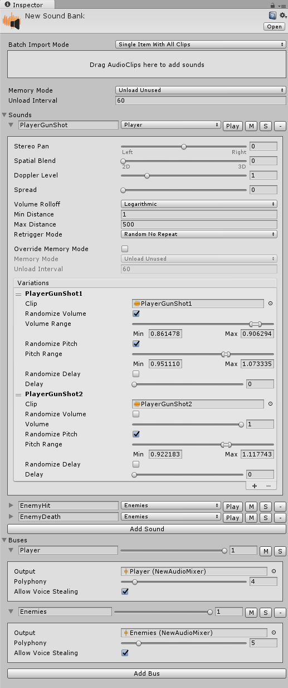

Sound Bank
Description
Sound bank is a collection of sounds and sound buses. It's stored inside the project Assets folder. Once filled with the content, it's ready to use in the code.
It's possible to have several sound banks. Stem will automatically search for the corresponding sound bank during the sound or sound bus lookup. In the case of name collisions, if multiple banks have sounds or sound buses with the same name, the primary sound bank (which you can only set in the code) will be checked first. Within a bank, the first occurrence of sound or sound bus will be used.
All sound effects must be organized into sounds with multiple variations. Each sound must have a sound bus assigned. It could be thematic sound buses, i.e. character, enemies, gunshots, etc. or just a single Master sound bus.
Each sound bus controls how many sounds can be played simultaneously.

Properties
| Property | Description |
|---|---|
| (Stem Pro) Memory Mode | The mode defining how audio clips will be managed in memory. |
| (Stem Pro) Unload Interval | The interval after which audio clips will be unloaded from memory. |
| Sounds | The collection of sounds. |
| Buses | The collection of sound buses. |
(Stem Pro) Fast Iterations
Stem Pro offers the ability to tweak sounds and hear changes in Edit Mode. You don't have to run the game, just press the "Play" button near desired sound to hear it.
(Stem Pro) Batch Import
Stem Pro offers batch import via drag-and-drop. This greatly reduces the time spent on content creation. There are two import modes allowing to create either a new sound per audio clip or a single sound with all provided audio clips.
| Batch Import Mode | Description |
|---|---|
| Single Item With All Clips | A single sound with all provided audio clips will be created. |
| Multiple Items With Single Clip | A multiple sounds will be created, one for each provided audio clip. |
(Stem Pro) Advanced Memory Management
Stem Pro offers three different management modes which help to reduce overall audio memory usage. Feel free to combine all of them for your needs.
For example, you can create a sound bank which will hold all common sounds (e.g. UI or player) and keep it in memory while also having separate sound banks for each level with "Unload Unused" memory mode. It's also possible to override memory management mode for individual sounds within the bank.
| Memory Mode | Description |
|---|---|
| Preload And Keep In Memory | Preload audio clip data during startup and keep it always in memory. |
| Unload Unused | Unload audio clip data if it was not used for some time. |
| Manual | Do not manage audio clip data and instead allow the developer to take control. |